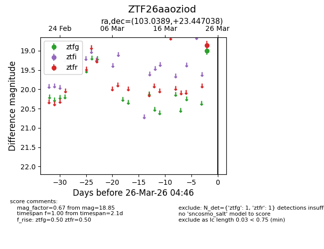
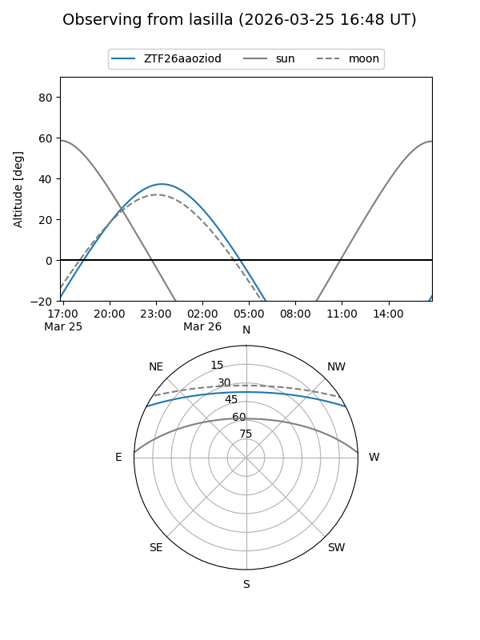
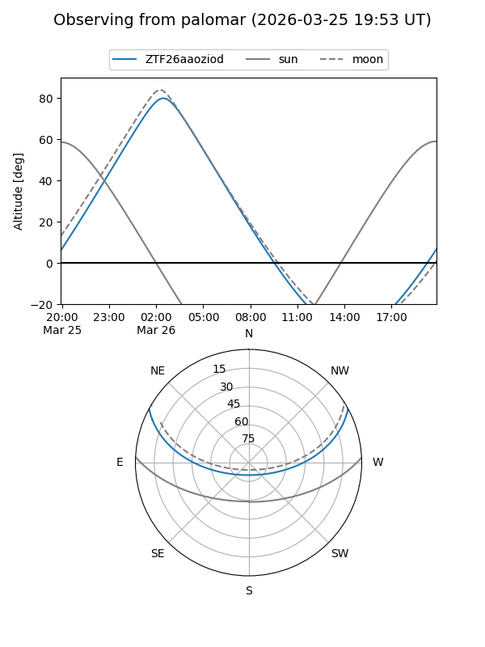

ZTF26aaoziod
Target ZTF26aaoziod at 2026-03-26 04:48
Aliases and brokers:
FINK: link
Lasair: link
ALeRCE: link
alt names
ZTF26aaoziod (ztf,fink_ztf)
Coordinates:
equatorial (ra, dec) = 103.0389,+23.44704
equatorial (HMS+DMS) = 06:52:09.33,+23:26:49.34
galactic (l, b) = (191.8965,+10.60245)
Flags:
Photometry:
last ztfg=19.00, ztfr=18.85
1 ztfg, 1 ztfr detections
Lightcurve

Visibility


Additional plots